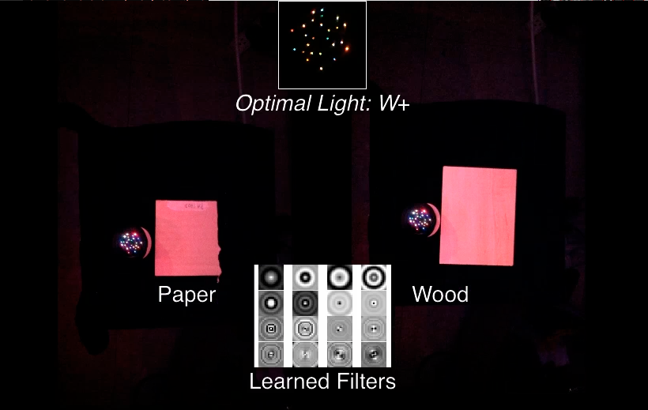

Learning Discriminative Illumination and Filters for BTF Classification |
| |
We present a computational imaging method for raw material
classification using features of Bidirectional Texture Functions
(BTF). Texture is an intrinsic feature for many materials, such as
wood, fabric, and granite. At appropriate scales, even " uniform "
materials will also exhibit texture features that can be helpful for
recognition, such as paper, metal, and ceramic. To cope with the
high-dimensionality of BTFs, in this project, we proposed to simultaneously learn
discriminative illumination patterns and texture filters, with which
we can directly measure optimal projections of BTFs for
classification. We also studied the effects of texture rotation and
scale variation for material classification. We built an LED-based
multispectral dome, with which we have acquired a BTF database of a
variety of materials and demonstrated the effectiveness of the
proposed approach for material classification.
|
Publications
Chao Liu, Gefei Yang, and Jinwei Gu. Learning Discriminative Illumination and Filters for Raw Material
Classification with Optimal Projections of Bidirectional Texture Functions. CVPR 2013.
Chao Liu, Gefei Yang, and Jinwei Gu.Supplementary
Document (with proof and other experimental details).
|
Images
 |
|
Texture classification with discriminative illumination and filters:
Texture classification with discriminative illumination and
filters. (a) Classifying aluminum and stainless steel under
conventional lighting with regular color camera is challenging,
since they have similar color and gloss. (b) We proposed to capture
projections of BTFs for material classification with coded
illumination, implemented as a LED-based multispectral dome. (c) and
(d) show the optimal illumination. The bar graph shows the learned
w, where the 25 bar groups correspond to the 25 LED clusters and the
six bars within each group correspond to the six LEDs. This coded
light pattern is also shown as w_p and w_n where w = w_p-w_n. (e)
The optimal filters. (f)(g)(h) show the classification rates on test
data using the VZ texture classifier [Varma05], BRDF Projection
[Gu09] and our method with the same number of measurements.
|
|
|
The effect of
orientation for BTF classification:
The effect of orientation for BTF classification. (a) We prepared two
materials coated with the same blue paint for material classification
with texture only. The samples measured at different orientations show
the changes in self-shadow and specular lobe caused by surface geometry.
(b) By using multiple rotated samples in training, we learned
classifiers (i.e., illumination and filters) that are more robust to
orientation. (c) As expected, the accuracy of our BTF projection method
increases with the number of rotated samples added to the training set,
while the BRDF projection method [Gu09] does not vary significantly.
|
|
|
The effect of scale for BTF classification:
(a)(b) show the images of carpet and paper captured at two different
scales. (c)(e): the optimal illumination (w_p, w_n) and filters
trained with samples in one scale. (d)(f): the optimal illumination
(w_p, w_n) and filters trained with samples in both scales. The
differences in the trained illumination and filters confirm that BTF
is not scale-invariant. (g): classification results when only
samples in one scale are included in the training set. (h)
classification results when samples in both scales are included in
training set. The classification rate increases as the training sets
include both scales.
|
|
|
Comparisons with other texture-based methods:
The classification for aluminum and stainless steel samples. (a)
Images of samples when all LEDs are turned on; (b) VZ classifier ;
(c) 3D texton; (d) BRDF projection; (e) BRDF projection coupled with
optimal filters; (f) Our method. The accuracy is shown in the
bracket.
|
|
|
Trained filter banks with different filter sizes:
From top to bottom, the filter sizes are: 3 x 3, 7 x 7,11 x 11, 19 x
19 and 27 x 27, with the classification rate for the task aluminum
vs. stainless shown to the bottom of each filter bank. The
corresponding filters, shown in the same column, are not necessarily
the scaled versions of each other due to two reasons: 1) increasing
the filter size does not necessarily include more informations about
the texture due to the repetition of patterns. 2) As the filter size
increases, it is more likely to include outliers, such as the
specular lobes, into the training set.
|
|
|
The filters in the
optimal filter banks with different number of filters:
The filters in the optimal filter banks with different number of
filters. Shown on the left side are the number of filters in the filter
bank and the classification rate for the task aluminum vs. stainless
steel. As shown, the performance for this task increases fast with the
number of filters. This indicate that the classification of aluminum
and stainless can be performed well on a subspace of BTF with lower
dimensionality. The observation is similar in [Varma05] that some
texture classification tasks can be performed well even though the
sampling patch size is small (i.e., using more local feature).
Within each filter bank, the spatial frequency of the learned filter
increases with the index of filter. This indicates that the
difference of the projection of BTF is concentrated on the low
spatial frequencies.
|
|
Video
If you are having trouble viewing these .mp4 videos in your browser, please save them to your computer first (by right-clicking and choosing "Save Target As..."), and then open them.
|  |
|
Supplementary Video:
This video includes more experimental results. (2.3MB)
|
|
Slides
CVPR 2013 Poster
|
Discriminative Illumination for BRDF Classification
Material Classification with BRDF Slices
Optimal Illumination for Material Classification
|
|

{kind=link}
{kind=link}
{kind=link}
{kind=link}
{kind=link}